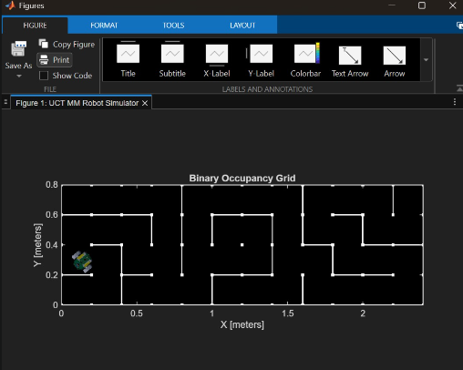
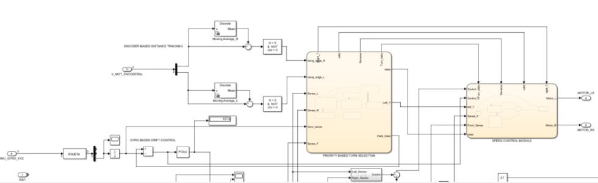

Micromouse in Operation
Micromouse
This project involved the assembly of a Micromouse, the simulation and design of a maze-solving algorithm in MATLAB Simulink, and the physical deployment of the algorithm on the assembled mouse to solve a random maze.
The simulated mouse was used in tandem with the physical mouse to configure and refine the sensors. The algorithm was developed using a series of Stateflow blocks that determined the actions to be taken based on sensor readings.
Wheel encoders were used to track distance, while time-of-flight sensors were used to make critical decisions about the next course of action. The sensor readings were filtered and adjusted to improve the mouse's ability to complete the task.
The final result was a Micromouse capable of solving a maze. Further improvements could be made to increase the speed at which the maze is solved.